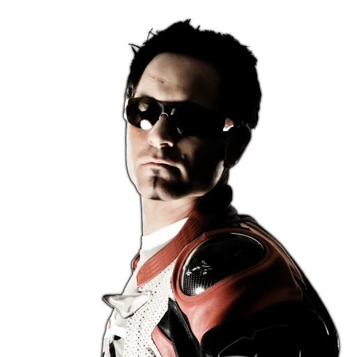

BLACKLIST ARCHIVE
DRIVER ROSTER.
Browse all fifteen rivals by rank and open a record for driver and challenge details.
15 DRIVER FILES
Razor
BMW M3 GTR
VIEW PROFILE
The top-ranked rival and the driver behind the M3 GTR setup. His record is the final target on the Rockport list.
Bull
Mercedes-Benz SLR McLaren
VIEW PROFILE
A high-ranking Rockport rival. His vehicle file records the SLR McLaren and his place just below the top spot.
Ronnie
Aston Martin DB9
VIEW PROFILE
Blacklist #03. Open the record to review the rival's vehicle file and challenge history.
JV
Dodge Viper SRT-10
VIEW PROFILE
Blacklist #04. The dossier tracks the driver's standing, signature vehicle, and pursuit record.
Webster
Chevrolet Corvette C6.R
VIEW PROFILE
Blacklist #05. Review this rival's vehicle file and race record from the Rockport archive.

DRIVER / VEHICLE FILE#06Ming
Lamborghini Gallardo
VIEW PROFILE
Blacklist #06. A rival record containing vehicle and challenge details.
Kaze
Mercedes-Benz CLK 500
VIEW PROFILE
Blacklist #07. The archive follows the car, race record, and pursuit notes for this entry.
Jewels
Ford Mustang GT
VIEW PROFILE
Blacklist #08. Open the file for the vehicle record and challenge history.
Earl
Mitsubishi Lancer Evolution VIII
VIEW PROFILE
Blacklist #09. The dossier keeps the driver's race file and vehicle information together.
Baron
Porsche Cayman S
VIEW PROFILE
Blacklist #10. A Rockport rival record with vehicle and challenge notes.
Big Lou
Mitsubishi Eclipse
VIEW PROFILE
Blacklist #11. Review the vehicle record and the rival's place in the pursuit through Rockport.
Izzy
Mazda RX-8
VIEW PROFILE
Blacklist #12. The archive's driver file brings together the vehicle and challenge record.
Vic
Toyota Supra
VIEW PROFILE
Blacklist #13. Open the record for the rival's vehicle details and challenge notes.
Taz
Lexus IS 300
VIEW PROFILE
Blacklist #14. A lower-ranked driver file documenting the Lexus and the road to the top of the list.
Sonny
Volkswagen Golf GTI
VIEW PROFILE
Blacklist #15. The first rival record on the climb through Rockport's fifteen drivers.
NO DRIVER FILES MATCH THAT SEARCH.